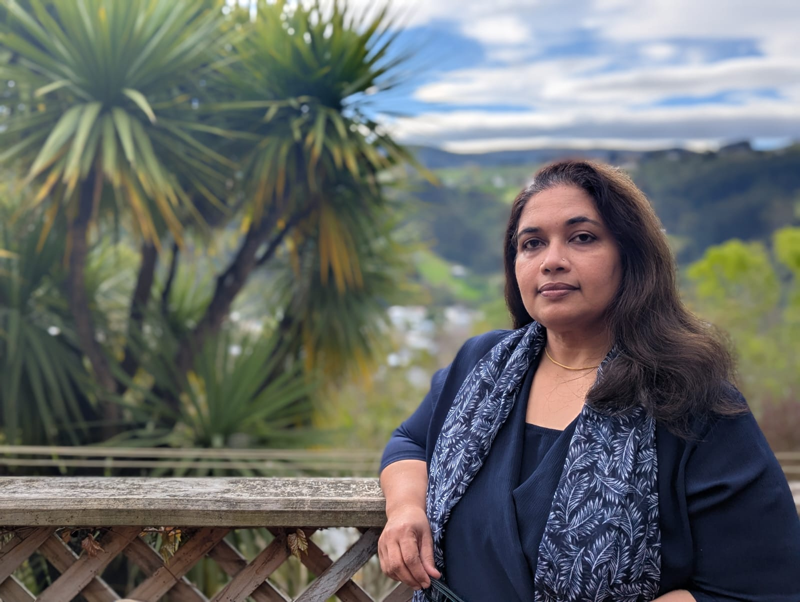

Specialist. Independent.
Built to withstand scrutiny.
The people who do the work.

Sreevidya Varma
Sreevidya leads every WORQsense investigation personally. She is an AWI Certificate Holder (AWI-CH), an examination-based credential reflecting individual investigative competence, and one of a small number of AWI-CH holders in Asia. Her practice spans PoSH Act proceedings, Grievance Redressal Committee matters, and employment investigations across India and New Zealand, with a consistent focus on procedural rigour, evidence-based findings, and trauma-aware practice.
She is also an AMINZ-credentialled mediator, bringing certified conciliation capability to matters where early resolution is appropriate.
LinkedInSupriya Menon
Supriya Menon brings three decades in the training industry to WORQsense's capacity-building work, alongside ground-level experience of workplace conduct: she has served as an Internal Committee (IC) Member and Chairperson, managing complex PoSH matters firsthand. She delivers and facilitates WORQsense's investigation training programmes, building practical investigative capability rather than compliance awareness.
LinkedInDaren Jay
For specialist investigative interviewing training, WORQsense partners with Daren Jay and Interview Management Solutions (IMS), Australia. Over 30 years in law enforcement and government investigations, and a UK Home Office Investigative Interview Trainer since 1996. Lecturer in Policing at Charles Sturt University. Has trained investigators for the World Bank Group, European Investment Bank, the Australian Taxation Office, and Westpac.
In 2013, Daren designed and built TILES, the world's first investigative interview management software, making interview skill observable and measurable.
What WORQsense does, and how.
WORQsense conducts independent investigations into workplace misconduct, sexual harassment, bullying, and complex employment matters, and delivers practitioner-grade training for IC, GRC, and HR teams. Two services. One standard.
Independent investigations
Every investigation is led personally by an AWI Certificate Holder. Independent of the organisation, independent of the parties, independent of outcome. Built to survive challenge in court, on appeal, and under review.
How we investigatePractitioner-grade training
Training for IC and GRC members, HR and ER teams, and internal investigators. From awareness programmes to specialist investigative interviewing, delivered in partnership with IMS Australia. The only programme of its kind in India.
Training programmes350+ investigations. 50+ organisations.
In practice since 2014, across India and New Zealand. PoSH Act, Grievance Redressal Committee (GRC) proceedings, bullying, misconduct, and employment matters. Serving the IT sector, professional services, healthcare, manufacturing, and more.
India and New Zealand
Deep practice in Indian PoSH and IR Code contexts since 2014. New Zealand employment investigations and mediations since 2023. A practice that understands both regulatory environments, not adapted from somewhere else.
Independent. Structured. Evidence-led. Human.
Independent means being free to reach the finding the evidence supports, including an unwelcome one.
Independent
No advisory role, no prior relationship, no conflicting position. Willing to find what the evidence requires, including findings that are unwelcome.
Structured
Procedural fairness at every step: allegations put clearly, a real opportunity to respond, a record of how each decision was reached.
Evidence-led
Findings tied to evidence. Inferences documented as inferences. Credibility assessed on reasoning that can be read and tested, not on impression.
Human
Trauma-aware practice that accounts for how trauma affects memory, disclosure, and credibility. Honest scope, proportionate conclusions, no inflated findings.
Standards we hold ourselves to.
- Association of Workplace Investigators
- Human Resources New Zealand
- Asia Pacific Federation of Human Resource Management
- International Investigative Interviewing Research Group
A difficult matter has landed on your desk.
Tell us enough to understand the situation. We will tell you honestly whether an independent investigation is the right next step. No pitch, no pressure.